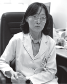
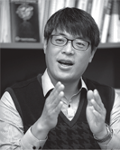
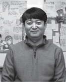
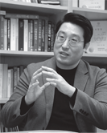

모두가 꿈을 이룰 수 있도록 끊임없이 혁신하고 지원하는 대학.
학생이 만족하고 성장할 수 있는 자부심이 넘치는 대학.
연구자가 최선의 연구에 몰입할 수 있도록 연구 환경을 갖춘 대학.
더 나은 미래가 시작되는 곳,
충북대학교

충북대학교는 자부심이 넘치는 대학입니다.
다양한 취업 지원 프로그램과 장학금 혜택으로 많은 도움을 받았지만, 무엇보다도 평생사제제를 통한 지도 교수님과의 학업, 진로 상담이 가장 큰 도움이 되었습니다. 내가 잘하는 것이 무엇인지 사회가 나에게 요구하는 것이 무엇인지 찾고 그에 맞춰 꿈을 설계해 왔습니다. 졸업 후 꿈을 향한 첫 발걸음에 자신감이 생깁니다. 이웃과 공동체를 배려하며 빛나는 개신인으로서
당당함을 잃지 않겠습니다.
- 간호학과 안홍자 학생(20학번)
성공 취업·창업 지원 시스템
● Gap-Zero 자기 주도 취업 프로그램 운영
완벽한 취업을
준비하는
Gap-Zero
프로그램
● 대학일자리센터 운영
● 창업 담당 부서 일원화를 통한 성장 단계별 맞춤 지원
● 창업 인재 발굴 프로그램 운영 및 한국형 I-Corps 선정을 위한 컬설팅
창의 인재양성을 위한 학생 지원
- 1위
-
등록금 대비 교육비 지급률 거점대 1위
(2022 중앙일보 평가)
- 88,108건
-
입학부터 취업까지 지도교수와 함께하는 평생사제제 운영
• 20,609명의 학생 참여
• 총 88,108건 상담 진행(2020-2022학년도)
- 2위
-
등록금 대비 장학금 지금률 거점대 2위
(2022 중앙일보 평가)• 1인당 연평균 등록금 427만 원
• 1인당 연평균 장학금 299만 원(수혜율 86%)
- 4,121명
-
총 4,121명을 수용하는 5개의 학생생활관 운영
• 정원 60% 신입생 우선 배정
• 4차 BTL 신축(오송, 2026년 입주)
충북대학교는 도전과 혁신을 통해 글로벌 연구 경쟁력을 키웁니다.
충북대학교는 우리 사회와 인류가 당연한 문제 해결을 위해 도전적 연구와 지식을 추구하고 있습니다. 연구 중심 대학으로서 글로벌 경쟁력을 갖추기 위해 창의적 연구 생태계를 조성해 가고 있습니다. 또한, 지역산업과 동반 성장하며 충북대학교의 가치가 확산될 수 있도록 국내 최고의 산·학·관·연의 플랫폼을 구축해 갈 것입니다.
- 이준수 연구차장(식품생명공학과)
연구 및 산학 협력 성과 (대학정보공시 2021-2023)
- 논문실적
-
국내 894.96건
국제(SCI급 학술지) 853.84건
- 연구 과제 및 연구비 총액
-
3,129건
2,818억 원
- 기술이전 실적
-
580건
68억 원
- 특허 출원 및 등록 실적
-
국내 출원 884건 / 등록 560건
해외 출원 102건 / 등록 17건
1 위
교원 1인당 기술이전 수입료 거점국립대학교 1위
교웍 1인당 특허 등록 건수 거점국립대학교 1위
세계적인 연구실
-
인공지능시스템반도체융합연구센터
진화가능한 멀티칩 타일구조 인공지능 반도체 설계와 전문 연구원 양성
사업책임자 | 전자공학부 김형원 교수
-
종양이환네트워크연구센터
한국생명공학연구원, 게놈연구재단, 미국스탠리연구소, 미국국립암연구센터, 영국런던대 동과 난치질환과 종양이환에 대한 병리기전 연구
사업책임자 | 약학대 홍진태 교수
-
중증폐질환연구센터
폐질환 관련 기초 병인 연구와 R&D 연구를 융복합적으로 수행
사업책임자 | 의과대 김응국 교수
-
공공연구성과 가치창출 기술키움사업단
앱타머-엑소좀 핵심원천기술을 이용한 혈관성 치매 진단 제품 등 충북 신성장 바이오산업 개발
사업책임자 | 미생물학과 안지영 교수
-
반려동물중개의학암센터
과학기술·ICT 국제화 사업의 일환으로 반려동물 중개의학을 이용한 정밀의료플랫폼 구축 사업
사업책임자 | 수의학과 최경철 교수
충북대학교는 지속 가능한 지역 사회를 만드는 데 앞장서고 있습니다.
충북대학교는 70여 년간 지역사회의 교육과 발전을 이끌어왔으며 그 역사의 현장에는 20만 동문의 헌신이 있었습니다. 이제 우리는 당연한 디지털 시대에 대응하기 위해 미래형 교육 플랫폼으로 혁신하고 지속 가능한 사회를 만드는 데 앞장서고 있습니다. 또한 이웃의 아픔과 어려움을 공감하며 사회 문제를 적극적으로 해결할 수 있는 공동체적 사고의 리더를 육성하고 있습니다. 지역과 동반하여 성장하고 있는 충북대학교를 언제나 응원합니다. - SK하이닉스 이일우 부사장(경영학과 90학번)
신기술, 첨단 분야 중심의 교육 과정 확대
● 첨단 분야 학과 신설
- • 지능로봇공학과
- • 미래자동차공학과
- • 제약바이오학과
- • 화장품산업학과
- • 천연물소재학과
- • 방사광융합학과
● 융합전공 개설(총 30개)
- • 스마트팩토리
- • 스마트도시
- • 스마트전력IT
- • 스마트디자인
- • 지식재산스마트융합
- • 미래자동차시스템
- • 자율주행친환경차
- • 이차전지융합
- • 반도체소재부품장비
- • 반도체회로소자시스템 등
미래지향적 교육시스템 운영
-
1
공동체적 가치를 함양하는
전인교육 시스템 Residential College 운영 -
2
자기 주도적으로 교육과정을 기획·설계하는
학생설계전공제도 운영(2023년 7개 전공) -
3
다양한 전공 분야를 이수할 수 있는
소단위 전공과정(Micro Degree 등) 도입 -
4
학생 맞춤형 지도를 위한 교과·비교과 통합관리
시스템 CIEAT(씨앗) 운영
봉사와 나눔 실천봉사 활동 내역(최근 3년)

충북대학교는 더 넓은 세상과 소통하는 글로벌 리더를 양성합니다.
직지가 만들어진 청주에 대한 호기심과 천문우주에 관해 공부하고 싶어 정부초청외국인장학생(GKS)으로 충북대학교에 오게 되었습니다. 대한민국 정부에서 전액 장학금을 받고 있어 학업에 집중할 수 있고 대학에서 제공하는 다양한 문화 체험을 비롯해 글로벌서포터즈 활동을 통해 한국을 많이 알게 되었습니다. 특히 외국인 학생 도우미인 ‘베스티’ 친구들과 다양한 행사에 참여하면서 즐겁게 대학 생활을 누릴 수 있었습니다. 내게 또 다른 세상을 알게 해 준 충북대학교. I Love CBNU.
- 천문우주학과 Els, Bianca(22학번)
국제교류 프로그램
- 외국어 강좌 운영(IILE)
- 다양한 외국어 강좌로 대학 구성원 및 지역사회의 양질의 외국어 교육 기회 제공
- 유학생지원센터(ISSC)
- 유학생 입학 - 정주 - 졸업까지 체계적인 지원 프로그램을 통한 성공적인 유학 경험 제공
- 정부초청외국인장학(GKS) 프로그램
- 대한민국 정부 초청 전액 장학프로그램 운영을 통한 글로벌 인재 양성
- 파견·유치 교환학생 프로그램
- 해외 대학과의 학생 교류를 통한 글로벌 수학 기회 제공
- 한국어연수과정(KLP)
- 한국 유학에 필요한 한국어 능력 및 문화체험 기회 제공
- 사회통합프로그램(KIIP)
- 법무부 위탁 충북지역 이민자 교육 전담(연 100여 개 과정 1,200명 참여)
충북대학교는 진취적인 연구를 통해 인류사회에 도움이 되고자 합니다.
저의 연구 목표는 모두에게 유용한 기술을 연구 개발하여 미래 사회에 도움이 되는 것입니다. 그리고 학생들에게 최신 기술 동향과 IT기술을 소개하여 4차 산업혁명 시대를 이끄는 인재가 되도록 하는 것입니다. 사회에 도움이 되고 미래가치를 창출한다는 것이 다시 새로운 연구를 시작하게 하는 원동력이 되는 것 같습니다.
- 김민구 부교수
-

연구자 | 건축공학과 부교수 김민구
논문명 | 정합(Registration-free)이 필요 없는 3차원 포인트 클라우드 생성 기법
게재 학술지명 | COMPUTER-AIDED CIVIL AND INFRASTRUCTURE ENGINEERING -

연구자 | 국제경영학과 교수 박현정
논문명 | 기술에 대한 심리적 성향과 무인 매장 경험자의 패러독스 및 행동적 태도 간의 관계 연구
게재 학술지명 | JOURNAL OF RETAILING AND CONSUMER SERVICES -

연구자 | 공업화학과 부교수 조중상
논문명 | 기존 상용화된 리튬 이온 이차전지를 대체할 장수명의 고효율 소듐 이온 이차전지 연구
게재 학술지명 | NANO - MICRO LETTERS -

연구자 | 전자공학부 교수 김형원
성과 | 지역혁신선도연구센터 선정(인공지능시스템반도체 융합 연구센터)
지원기관 | 한국연구재단 -

연구자 | 의학과 교수 정혜원
논문명 | 코로나19 백신 접종 후 돌파감염이 되더라도 중증화 비율이 낮은 것은 체내 T세포의 면역 작용 때문임을 규명
게재 학술지명 | NATURE MICROBIOLOGY -

연구자 | 생물학과 부교수 김경환
논문명 | 히스톤 단백질 변형이 뇌신경세포 발달 과정과 뇌신경질환에 미치는 영향
게재 학술지명 | SIGNAL TRANSDUCTION AND TARGETED THERAPY -

연구자 | 물리학과 부교수 김경호
논문명 | 광산란체가 삽입된 유기발광다이오드(OLED)의 발광 특성 향성 작동 원리 규명
게재 학술지명 | ADVANCED MATERIALS -

연구자 | 물리학과 조교수 강현구
논문명 | 비등방성 엑시톤 유기 물질을 이용한 나노안테나의 제작과 나노광학적 특성 규명
게재 학술지명 | ADVANCED SCIENCE -

연구자 | 법학과 교수 최선웅
성과 | 대한민국학술원상 사회과학부문 수상
지원기관 | 대한민국학술원 -

연구자 | 전기공학부 교수 권오민
논문명 | 시간지연이 고려된 신경망의 수학적 모델에 대한 안정성 해석 등
성과 | 2022년 1월~10월 누적 논문 14편, 평균 JCR IF값 상위 4.596% / 수학 및 복합분야 6년 연속 세계 상위 1% -

연구자 | 신소재공학과 부교수 이동주
논문명 | 저차원 나노소재로 강화된 금속 기지 나노복합재료의 최신 연구동향과 산업적 활용분야 및 향후 전망 고찰
게재 학술지명 | PROGRESS IN MATERIALS SCIENCE -

연구자 | 경영정보학과 교수 서동백
논문명 | 독일과 한국에서 SNS 사용자의 자기 노출에 영향을 미치는 요인 비교분석
게재 학술지명 | TELEMATICS AND INFORMATICS -

연구자 | 화학공학과 교수 김범수
논문명 | 고농도 세포 배양용 막 생물반응기에서 목질계 바이오매스로부터 폴리하이드록시알카노에이트 및 아스타잔틴 생산
게재 학술지명 | CHEMICAL ENGINEERING JOURNAL -

연구자 | 정보통신공학부 교수 정재욱
논문명 | 반데르발스 힘의 조절을 통한 대면적 마이크로 LED의 정렬 및 집적 연구
게재 학술지명 | NATURE ELECTRONICS